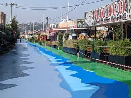
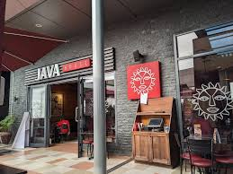
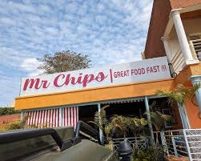

Discover Kigali's Best Food
From traditional Rwandan dishes to international cuisine - explore the most delicious places to eat in Kigali.
Explore Restaurants and Markets →🍕 Kigali differnt place differnt food

Nyamirambo
Macoco Resto is especially known for its very tasty pilau rice, as well as its porridge mixed with Blue Band and chocolate, which is loved by many visitors. It’s a great place to enjoy good food in a friendly, social atmosphere. and his price is affordeble to everyone
Explore Menu →
Kigali Heights
Java House Kigali Heights is a popular restaurant at Kigali Heights known for its great coffee, fresh meals, and relaxed modern atmosphere. It offers breakfast, lunch, and dinner with a mix of healthy and international dishes, making it a favorite spot for both casual dining and meetings.
Explore Menu →
Mrs. Chips
Mr Chips is a popular fast food restaurant located at kibagabaga known for burgers, fries, pizza, and chicken in a casual and lively setting. It’s a great place for quick meals with friends and family,
Explore Menu →Kimironko Market
Kimironko Market is a big market located near kimironko bus station in Kigali where people mainly buy food for cooking. You can find fresh vegetables like tomatoes, potatoes, carrots, and leafy greens, as well as fruits such as bananas, oranges, and pears. It is a good place to get fresh ingredients for daily meals.
Explore Menu →📊 Kigali Food Guide
| Restaurant/Place | Specialty | Average Price (RWF) | Location |
|---|---|---|---|
| Mumarangi | pilou rice, porridge mixed with Blue Band and chocolate | 2,000 - 4000 | Nyamirambo |
| Java Restaurants | International, Fine Dining | 15,000 - 40,000 | kacyiru kigali height |
| Mrs. Chips | Fries, Burgers, Grilled Chicken | 3,000 - 12,000 | kibagabaga |
| Kimironko Market | people mainly buy food for cooking | 500 - 5,000 | Kimironko |